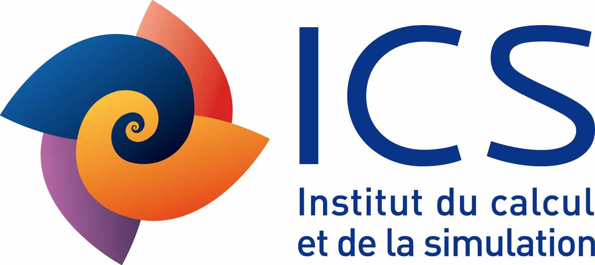
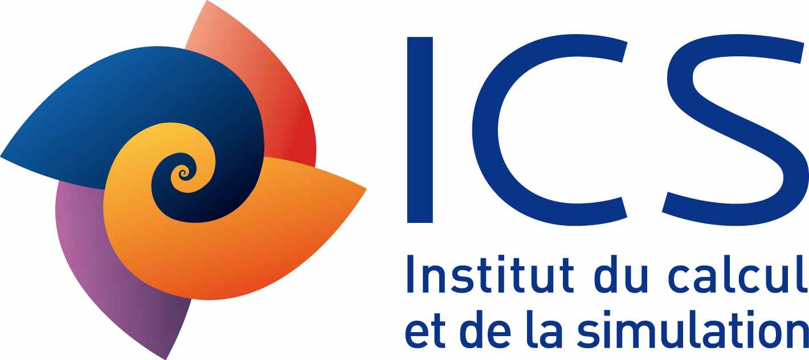
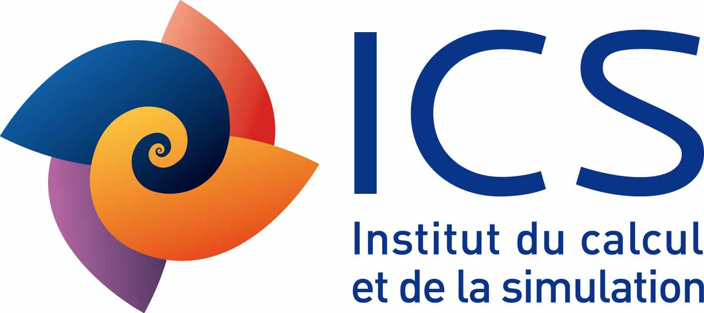
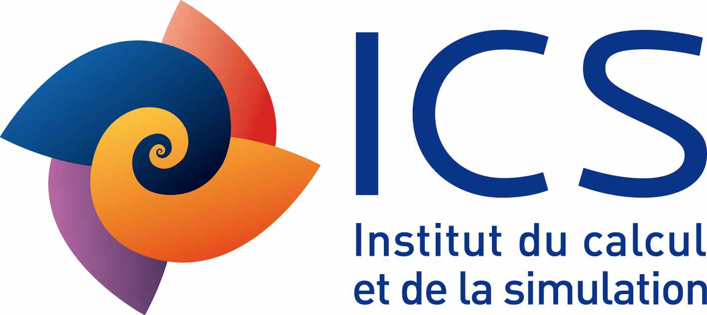

Eighth workshop on generic dolvers for PDEs:
FreeFem++ and its Applications
Paris, Jussieu, UPMC, December 8,9, 2016
INSCRIPTION, Information. AFFICHE/POSTER .
The sponsors: ANR Becasim
 

Day 1: Thursday, December 8th 2016
Morning session [
|
9h00-9h05 |
Introduction |
|
|
9h05-10h30 |
F. Hecht (LJLL, UPMC) |
FreeFem++ : status and future (pdf,zip (hecht data: FH.pdf + all edp script) ) |
|
10h30-10h50 |
|
|
|
10h50-11H05 |
Cedric Doucet (INRIA, UPMC) |
News about install add cmake ( slides pdf ) |
|
11h05-11h45 |
Pierre Jolivet (CNRS/IRIT/ENSEEIHT/Toulouse) |
FreeFem++ distributed solvers: status and future
|
|
11h45-12h15 |
Atsushi Suzuki (Cydermedia Center, Osaka University, Japan ) |
Implementation of a parallel sparse direct solver on vector architecture
|
|
|
Afternoon session Freefem++ training sessions (please bring your laptop)
|
14h00-14h30 |
Aina RAKOTONDRANDISA (LMRS, Univ. Rouen, France) |
Simulation of phase-change materials with an adaptive finite-element method
(pdf ) |
|
14h30-18h00 |
I. Danaila |
Basic Tutorial (part 1): generate a mesh, solve a linear PDE, ... .
|
|
14h30- 18h00 |
F. Hecht |
Expert Tutorial (part 1): How-to parallelize a script
|
Day 2: Friday, December 9th 2016
Morning session [
|
09h00-09h30 |
Martin Campos Pinto CNRS/LJLL |
From particle methods to hybrid semi-lagrangian schemes (pdf) |
|
09h30-10h00 |
Christopher Albert Technische Universität Graz Institut für Theoretische Physik - Computational Physics |
Dimensionality reduction using an edge finite element method for periodic magnetostatic fields in a symmetric domain ( pdf , the edp script file , ) |
|
10h00-10h30 |
|
|
|
10h30-11h00 |
Katsushi Ohmori^(1) and Atsushi Suzuki^(2) 1) Faculty of Human Development, University of Toyama , (2) Cydermedia Center, Osaka University, Japan |
Finite element computation of two-phase flow with level set method and explicit interface detection (pdf ) |
|
11h00-11h30 |
Frédéric Nataf , CNRS/LJLL/INRIA |
Microwave Imaging for Brain Stroke Detection and Monitoring using High Performance Computing
.(pdf ,
|
|
11h30-12h00 |
Marcela Szops (IRMA,Cemosis,Université de Strasbourg, France) |
Boundary conditions involving pressure for the Stokes problem and applications in computational hemodynamics(pdf) |
12h00-12h30 |
Ryadh Haferssas (LJLL/Alpines/UPMC/INria) |
Optimised interfaces for domain decomposition method applied to solid and fluid mechanics (pdf) |
|
|
|
14h00-14h30 |
Charles Dapogny (LJK / Université Joseph Fourier / Grenoble ) |
Geometric constraints for shape and topology optimization in architectural design(pdf) [ |
|
14h30-14h50 |
Sergey Grolovin (Novosibirsk, Russia ) |
Modelling of hydraulic fracturing and hemodynamical flows using freefem++ [ |
Afternoon session Freefem++ training sessions (please bring your laptop)
|
14h50-18h00 |
O. Pantz / O. Pironneau |
Basic Tutorial (part 2):
|
|
14h50-18h00 |
F. Hecht |
Expert Tutorial (part 2): a None trivail use of FreeFem++
[ |